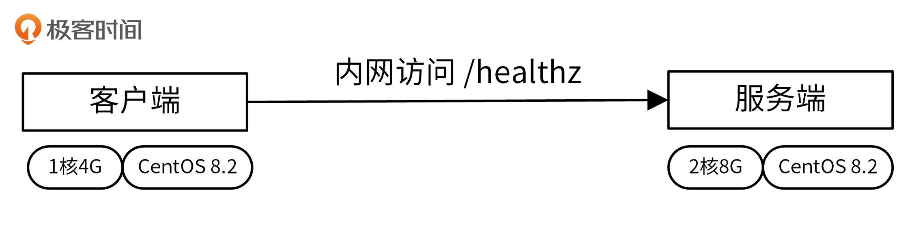
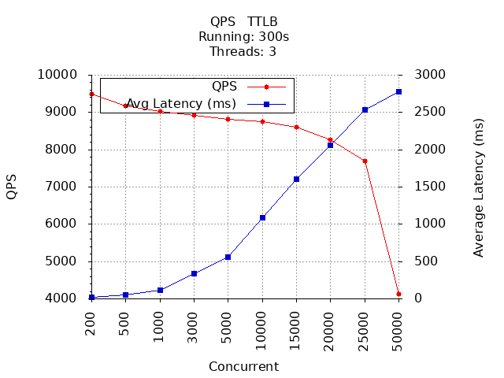
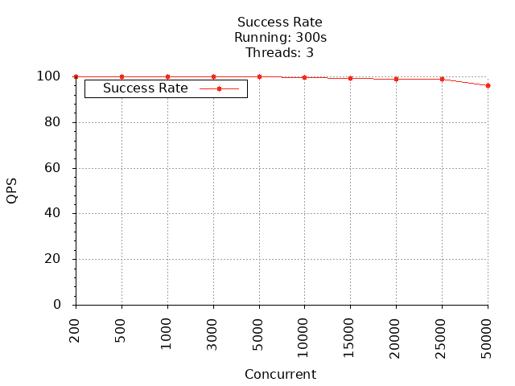
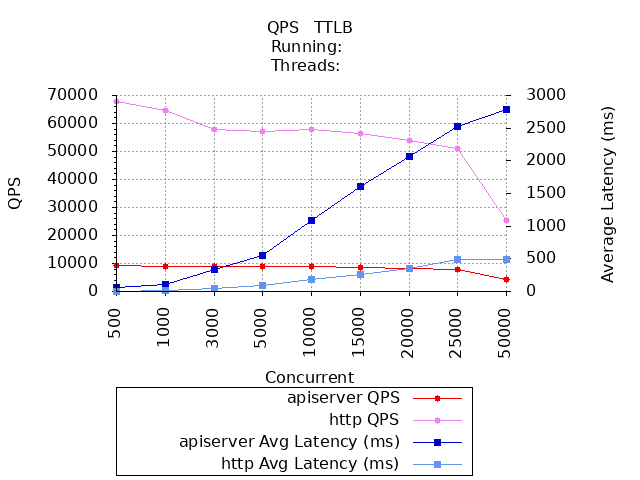
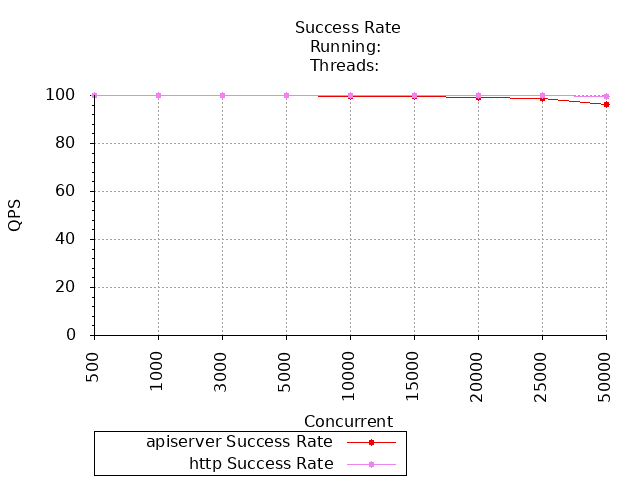
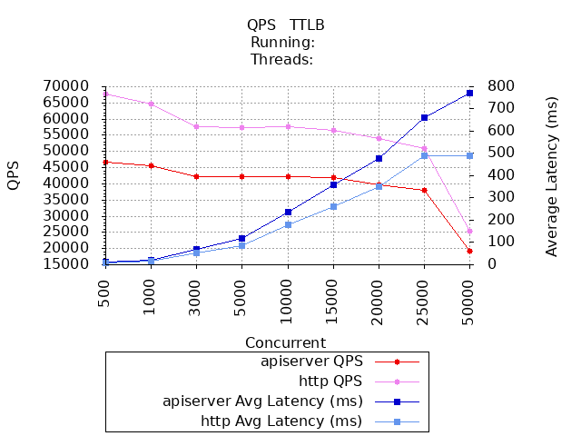
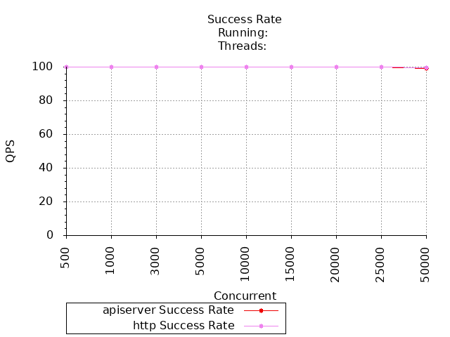
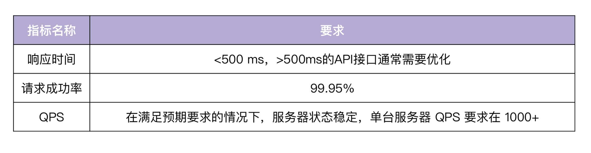

- 00 开篇词 从 0 开始搭建一个企业级 Go 应用.md.html
- 01 IAM系统概述：我们要实现什么样的 Go 项目？.md.html
- 02 环境准备：如何安装和配置一个基本的 Go 开发环境？.md.html
- 03 项目部署：如何快速部署 IAM 系统？.md.html
- 04 规范设计（上）：项目开发杂乱无章，如何规范？.md.html
- 05 规范设计（下）：commit 信息风格迥异、难以阅读，如何规范？.md.html
- 06 目录结构设计：如何组织一个可维护、可扩展的代码目录？.md.html
- 07 工作流设计：如何设计合理的多人开发模式？.md.html
- 08 研发流程设计（上）：如何设计 Go 项目的开发流程？.md.html
- 09 研发流程设计（下）：如何管理应用的生命周期？.md.html
- 10 设计方法：怎么写出优雅的 Go 项目？.md.html
- 11 设计模式：Go常用设计模式概述.md.html
- 12 API 风格（上）：如何设计RESTful API？.md.html
- 13 API 风格（下）：RPC API介绍.md.html
- 14 项目管理：如何编写高质量的Makefile？.md.html
- 15 研发流程实战：IAM项目是如何进行研发流程管理的？.md.html
- 16 代码检查：如何进行静态代码检查？.md.html
- 17 API 文档：如何生成 Swagger API 文档 ？.md.html
- 18 错误处理（上）：如何设计一套科学的错误码？.md.html
- 19 错误处理（下）：如何设计错误包？.md.html
- 20 日志处理（上）：如何设计日志包并记录日志？.md.html
- 21 日志处理（下）：手把手教你从 0 编写一个日志包.md.html
- 22 应用构建三剑客：Pflag、Viper、Cobra 核心功能介绍.md.html
- 23 应用构建实战：如何构建一个优秀的企业应用框架？.md.html
- 24 Web 服务：Web 服务核心功能有哪些，如何实现？.md.html
- 25 认证机制：应用程序如何进行访问认证？.md.html
- 26 IAM项目是如何设计和实现访问认证功能的？.md.html
- 27 权限模型：5大权限模型是如何进行资源授权的？.md.html
- 28 控制流（上）：通过iam-apiserver设计，看Web服务的构建.md.html
- 29 控制流（下）：iam-apiserver服务核心功能实现讲解.md.html
- 30 ORM：CURD 神器 GORM 包介绍及实战.md.html
- 31 数据流：通过iam-authz-server设计，看数据流服务的设计.md.html
- 32 数据处理：如何高效处理应用程序产生的数据？.md.html
- 33 SDK 设计（上）：如何设计出一个优秀的 Go SDK？.md.html
- 34 SDK 设计（下）：IAM项目Go SDK设计和实现.md.html
- 35 效率神器：如何设计和实现一个命令行客户端工具？.md.html
- 36 代码测试（上）：如何编写 Go 语言单元测试和性能测试用例？.md.html
- 37 代码测试（下）：Go 语言其他测试类型及 IAM 测试介绍.md.html
- 38 性能分析（上）：如何分析 Go 语言代码的性能？.md.html
- 39 性能分析（下）：API Server性能测试和调优实战.md.html
- 40 软件部署实战（上）：部署方案及负载均衡、高可用组件介绍.md.html
- 41 软件部署实战（中）：IAM 系统生产环境部署实战.md.html
- 42 软件部署实战（下）：IAM系统安全加固、水平扩缩容实战.md.html
- 43 技术演进（上）：虚拟化技术演进之路.md.html
- 44 技术演进（下）：软件架构和应用生命周期技术演进之路.md.html
- 45 基于Kubernetes的云原生架构设计.md.html
- 46 如何制作Docker镜像？.md.html
- 47 如何编写Kubernetes资源定义文件？.md.html
- 48 IAM 容器化部署实战.md.html
- 49 服务编排（上）：Helm服务编排基础知识.md.html
- 50 服务编排（下）：基于Helm的服务编排部署实战.md.html
- 51 基于 GitHub Actions 的 CI 实战.md.html
- 特别放送 Go Modules依赖包管理全讲.md.html
- 特别放送 Go Modules实战.md.html
- 特别放送 IAM排障指南.md.html
- 特别放送 分布式作业系统设计和实现.md.html
- 特别放送 给你一份Go项目中最常用的Makefile核心语法.md.html
- 特别放送 给你一份清晰、可直接套用的Go编码规范.md.html
- 直播加餐 如何从小白进阶成 Go 语言专家？.md.html
- 结束语 如何让自己的 Go 研发之路走得更远？.md.html
- 捐赠
39 性能分析（下）：API Server性能测试和调优实战
你好，我是孔令飞。
上一讲，我们学习了如何分析Go代码的性能。掌握了性能分析的基本知识之后，这一讲，我们再来看下如何分析API接口的性能。
在API上线之前，我们需要知道API的性能，以便知道API服务器所能承载的最大请求量、性能瓶颈，再根据业务对性能的要求，来对API进行性能调优或者扩缩容。通过这些，可以使API稳定地对外提供服务，并且让请求在合理的时间内返回。这一讲，我就介绍如何用wrk工具来测试API Server接口的性能，并给出分析方法和结果。
API性能测试指标
API性能测试，往大了说其实包括API框架的性能和指定API的性能。不过，因为指定API的性能跟该API具体的实现（比如有无数据库连接，有无复杂的逻辑处理等）有关，我认为脱离了具体实现来探讨单个API的性能是毫无意义的，所以这一讲只探讨API框架的性能。
用来衡量API性能的指标主要有3个：
- 并发数（Concurrent）：并发数是指某个时间范围内，同时在使用系统的用户个数。广义上的并发数是指同时使用系统的用户个数，这些用户可能调用不同的API；严格意义上的并发数是指同时请求同一个API的用户个数。这一讲我们讨论的并发数是严格意义上的并发数。
- 每秒查询数（QPS）：每秒查询数QPS是对一个特定的查询服务器在规定时间内所处理流量多少的衡量标准。QPS = 并发数 / 平均请求响应时间。
- 请求响应时间（TTLB）：请求响应时间指的是从客户端发出请求到得到响应的整个时间。这个过程从客户端发起的一个请求开始，到客户端收到服务器端的响应结束。在一些工具中，请求响应时间通常会被称为TTLB（Time to last byte，意思是从发送一个请求开始，到客户端收到最后一个字节的响应为止所消费的时间）。请求响应时间的单位一般为“秒”或“毫秒”。
这三个指标中，衡量API性能的最主要指标是QPS，但是在说明QPS时，需要指明是多少并发数下的QPS，否则毫无意义，因为不同并发数下的QPS是不同的。举个例子，单用户100 QPS和100用户100 QPS是两个不同的概念，前者说明API可以在一秒内串行执行100个请求，而后者说明在并发数为100的情况下，API可以在一秒内处理100个请求。当QPS相同时，并发数越大，说明API性能越好，并发处理能力越强。
在并发数设置过大时，API同时要处理很多请求，会频繁切换上下文，而真正用于处理请求的时间变少，反而使得QPS会降低。并发数设置过大时，请求响应时间也会变长。API会有一个合适的并发数，在该并发数下，API的QPS可以达到最大，但该并发数不一定是最佳并发数，还要参考该并发数下的平均请求响应时间。
此外，在有些API接口中，也会测试API接口的TPS（Transactions Per Second，每秒事务数）。一个事务是指客户端向服务器发送请求，然后服务器做出反应的过程。客户端在发送请求时开始计时，收到服务器响应后结束计时，以此来计算使用的时间和完成的事务个数。
那么，TPS和QPS有什么区别呢？如果是对一个查询接口（单场景）压测，且这个接口内部不会再去请求其他接口，那么TPS=QPS，否则，TPS≠QPS。如果是对多个接口（混合场景）压测，假设N个接口都是查询接口，且这个接口内部不会再去请求其他接口，QPS=N*TPS。
API性能测试方法
Linux下有很多Web性能测试工具，常用的有Jmeter、AB、Webbench和wrk。每个工具都有自己的特点，IAM项目使用wrk来对API进行性能测试。wrk非常简单，安装方便，测试结果也相对专业，并且可以支持Lua脚本来创建更复杂的测试场景。下面，我来介绍下wrk的安装方法和使用方法。
wrk安装方法
wrk的安装很简单，一共可分为两步。
第一步，Clone wrk repo：
$ git clone https://github.com/wg/wrk
第二步，编译并安装：
$ cd wrk
$ make
$ sudo cp ./wrk /usr/bin
wrk使用简介
这里我们来看下wrk的使用方法。wrk使用起来不复杂，执行wrk --help可以看到wrk的所有运行参数：
$ wrk --help
Usage: wrk <options> <url>
Options:
-c, --connections <N> Connections to keep open
-d, --duration <T> Duration of test
-t, --threads <N> Number of threads to use
-s, --script <S> Load Lua script file
-H, --header <H> Add header to request
--latency Print latency statistics
--timeout <T> Socket/request timeout
-v, --version Print version details
Numeric arguments may include a SI unit (1k, 1M, 1G)
Time arguments may include a time unit (2s, 2m, 2h)
常用的参数有下面这些：
- -t，线程数（线程数不要太多，是核数的2到4倍就行，多了反而会因为线程切换过多造成效率降低）。
- -c，并发数。
- -d，测试的持续时间，默认为10s。
- -T，请求超时时间。
- -H，指定请求的HTTP Header，有些API需要传入一些Header，可通过wrk的-H参数来传入。
- –latency，打印响应时间分布。
- -s，指定Lua脚本，Lua脚本可以实现更复杂的请求。
然后，我们来看一个wrk的测试结果，并对结果进行解析。
一个简单的测试如下（确保iam-apiserver已经启动，并且开启了健康检查）：
$ wrk -t144 -c30000 -d30s -T30s --latency http://10.0.4.57:8080/healthz
Running 30s test @ http://10.0.4.57:8080/healthz
144 threads and 30000 connections
Thread Stats Avg Stdev Max +/- Stdev
Latency 508.77ms 604.01ms 9.27s 81.59%
Req/Sec 772.48 0.94k 10.45k 86.82%
Latency Distribution
50% 413.35ms
75% 948.99ms
90% 1.33s
99% 2.44s
2276265 requests in 30.10s, 412.45MB read
Socket errors: connect 1754, read 40, write 0, timeout 0
Requests/sec: 75613.16
Transfer/sec: 13.70MB
下面是对测试结果的解析。
- 144 threads and 30000 connections：用144个线程模拟20000个连接，分别对应-t和-c参数。
- Thread Stats是线程统计，包括Latency和Req/Sec。
- Latency：响应时间，有平均值、标准偏差、最大值、正负一个标准差占比。
- Req/Sec：每个线程每秒完成的请求数, 同样有平均值、标准偏差、最大值、正负一个标准差占比。
- Latency Distribution是响应时间分布。
- 50%：50%的响应时间为413.35ms。
- 75%：75%的响应时间为948.99ms。
- 90%：90%的响应时间为1.33s。
- 99%：99%的响应时间为2.44s。
- 2276265 requests in 30.10s, 412.45MB read：30.10s完成的总请求数（2276265）和数据读取量（412.45MB）。
- Socket errors: connect 1754, read 40, write 0, timeout 0：错误统计，会统计connect连接失败请求个数（1754）、读失败请求个数、写失败请求个数、超时请求个数。
- Requests/sec：QPS。
- Transfer/sec：平均每秒读取13.70MB数据（吞吐量）。
API Server性能测试实践
接下来，我们就来测试下API Server的性能。影响API Server性能的因素有很多，除了iam-apiserver自身的原因之外，服务器的硬件和配置、测试方法、网络环境等都会影响。为了方便你对照性能测试结果，我给出了我的测试环境配置，你可以参考下。
- 客户端硬件配置：1核4G。
- 客户端软件配置：干净的
CentOS Linux release 8.2.2004 (Core)。 - 服务端硬件配置：2核8G。
- 服务端软件配置：干净的
CentOS Linux release 8.2.2004 (Core)。 - 测试网络环境：腾讯云VPC内访问，除了性能测试程序外，没有其他资源消耗型业务程序。
测试架构如下图所示：

性能测试脚本介绍
在做API Server的性能测试时，需要先执行wrk，生成性能测试数据。为了能够更直观地查看性能数据，我们还需要以图表的方式展示这些性能数据。这一讲，我使用 gnuplot 工具来自动化地绘制这些性能图，为此我们需要确保Linux服务器已经安装了 gnuplot 工具。你可以通过以下方式安装：
$ sudo yum -y install gnuplot
在这一讲的测试中，我会绘制下面这两张图，通过它们来观测和分析API Server的性能。
- QPS & TTLB图：
X轴为并发数（Concurrent），Y轴为每秒查询数（QPS）和请求响应时间（TTLB）。 - 成功率图：
X轴为并发数（Concurrent），Y轴为请求成功率。
为了方便你测试API接口性能，我将性能测试和绘图逻辑封装在scripts/wrktest.sh脚本中，你可以在iam源码根目录下执行如下命令，生成性能测试数据和性能图表：
$ scripts/wrktest.sh http://10.0.4.57:8080/healthz
上面的命令会执行性能测试，记录性能测试数据，并根据这些性能测试数据绘制出QPS和成功率图。
接下来，我再来介绍下wrktest.sh性能测试脚本，并给出一个使用示例。
wrktest.sh性能测试脚本，用来测试API Server的性能，记录测试的性能数据，并根据性能数据使用gnuplot绘制性能图。
wrktest.sh也可以对比前后两次的性能测试结果，并将对比结果通过图表展示出来。wrktest.sh会根据CPU的核数自动计算出适合的wrk启动线程数（-t）：CPU核数 * 3。
wrktest.sh默认会测试多个并发下的API性能，默认测试的并发数为200 500 1000 3000 5000 10000 15000 20000 25000 50000。你需要根据自己的服务器配置选择测试的最大并发数，我因为服务器配置不高（主要是8G内存在高并发下，很容易就耗尽），最大并发数选择了50000。如果你的服务器配置够高，可以再依次尝试下测试 100000 、200000 、500000 、1000000 并发下的API性能。
wrktest.sh的使用方法如下：
$ scripts/wrktest.sh -h
Usage: scripts/wrktest.sh [OPTION] [diff] URL
Performance automation test script.
URL HTTP request url, like: http://10.0.4.57:8080/healthz
diff Compare two performance test results
OPTIONS:
-h Usage information
-n Performance test task name, default: apiserver
-d Directory used to store performance data and gnuplot graphic, default: _output/wrk
Reprot bugs to <[email protected]>.
wrktest.sh提供的命令行参数介绍如下。
- URL：需要测试的API接口。
- diff：如果比较两次测试的结果，需要执行wrktest.sh diff 。
- -n：本次测试的任务名，wrktest.sh会根据任务名命名生成的文件。
- -d：输出文件存放目录。
- -h：打印帮助信息。
下面，我来展示一个wrktest.sh使用示例。
wrktest.sh的主要功能有两个，分别是运行性能测试并获取结果和对比性能测试结果。下面我就分别介绍下它们的具体使用方法。
- 运行性能测试并获取结果
执行如下命令：
$ scripts/wrktest.sh http://10.0.4.57:8080/healthz
Running wrk command: wrk -t3 -d300s -T30s --latency -c 200 http://10.0.4.57:8080/healthz
Running wrk command: wrk -t3 -d300s -T30s --latency -c 500 http://10.0.4.57:8080/healthz
Running wrk command: wrk -t3 -d300s -T30s --latency -c 1000 http://10.0.4.57:8080/healthz
Running wrk command: wrk -t3 -d300s -T30s --latency -c 3000 http://10.0.4.57:8080/healthz
Running wrk command: wrk -t3 -d300s -T30s --latency -c 5000 http://10.0.4.57:8080/healthz
Running wrk command: wrk -t3 -d300s -T30s --latency -c 10000 http://10.0.4.57:8080/healthz
Running wrk command: wrk -t3 -d300s -T30s --latency -c 15000 http://10.0.4.57:8080/healthz
Running wrk command: wrk -t3 -d300s -T30s --latency -c 20000 http://10.0.4.57:8080/healthz
Running wrk command: wrk -t3 -d300s -T30s --latency -c 25000 http://10.0.4.57:8080/healthz
Running wrk command: wrk -t3 -d300s -T30s --latency -c 50000 http://10.0.4.57:8080/healthz
Now plot according to /home/colin/_output/wrk/apiserver.dat
QPS graphic file is: /home/colin/_output/wrk/apiserver_qps_ttlb.png
Success rate graphic file is: /home/colin/_output/wrk/apiserver_successrate.pngz
上面的命令默认会在_output/wrk/目录下生成3个文件：
- apiserver.dat，wrk性能测试结果，每列含义分别为并发数、QPS 平均响应时间、成功率。
- apiserver_qps_ttlb.png，QPS&TTLB图。
- apiserver_successrate.png，成功率图。
这里要注意，请求URL中的IP地址应该是腾讯云VPC内网地址，因为通过内网访问，不仅网络延时最低，而且还最安全，所以真实的业务通常都是内网访问的。
- 对比性能测试结果
假设我们还有另外一次API性能测试，测试数据保存在 _output/wrk/http.dat 文件中。
执行如下命令，对比两次测试结果：
$ scripts/wrktest.sh diff _output/wrk/apiserver.dat _output/wrk/http.dat
apiserver.dat和http.dat是两个需要对比的Wrk性能数据文件。上述命令默认会在_output/wrk目录下生成下面这两个文件：
- apiserver_http.qps.ttlb.diff.png，QPS & TTLB对比图。
- apiserver_http.success_rate.diff.png，成功率对比图。
关闭Debug配置选项
在测试之前，我们需要关闭一些Debug选项，以免影响性能测试。
执行下面这两步操作，修改iam-apiserver的配置文件：
- 将
server.mode设置为release，server.middlewares去掉dump、logger中间件。 - 将
log.level设置为info，log.output-paths去掉stdout。
因为我们要在执行压力测试时分析程序的性能，所以需要设置feature.profiling为true，以开启性能分析。修改完之后，重新启动iam-apiserver。
使用wrktest.sh测试IAM API接口性能
关闭Debug配置选项之后，就可以执行wrktest.sh命令测试API性能了（默认测试的并发数为200 500 1000 3000 5000 10000 15000 20000 25000 50000）:
$ scripts/wrktest.sh http://10.0.4.57:8080/healthz
生成的QPS & TTLB图和成功率图分别如下图所示：

上图中，X轴为并发数（Concurrent），Y轴为每秒查询数（QPS）和请求响应时间（TTLB）。

上图中，X轴为并发数（Concurrent），Y轴为请求成功率。
通过上面两张图，你可以看到，API Server在并发数为200时，QPS最大；并发数为500，平均响应时间为56.33ms，成功率为 100.00% 。在并发数达到1000时，成功率开始下降。一些详细数据从图里看不到，你可以直接查看apiserver.dat文件，里面记录了每个并发下具体的QPS、TTLB和成功率数据。
现在我们有了API Server的性能数据，那么该API Server的QPS处于什么水平呢？一方面，你可以根据自己的业务需要来对比；另一方面，可以和性能更好的Web框架进行对比，总之需要有个参照。
这里用net/http构建最简单的HTTP服务器，使用相同的测试工具和测试服务器，测试性能并作对比。HTTP服务源码为（位于文件tools/httptest/main.go中）：
package main
import (
"fmt"
"log"
"net/http"
)
func main() {
http.HandleFunc("/healthz", func(w http.ResponseWriter, r *http.Request) {
message := `{"status":"ok"}`
fmt.Fprint(w, message)
})
addr := ":6667"
fmt.Printf("Serving http service on %s\n", addr)
log.Fatal(http.ListenAndServe(addr, nil))
}
我们将上述HTTP服务的请求路径设置为/healthz，并且返回{"status":"ok"}，跟API Server的接口返回数据完全一样。通过这种方式，你可以排除因为返回数据大小不同而造成的性能差异。
可以看到，该HTTP服务器很简单，只是利用net/http包最原生的功能，在Go中几乎所有的Web框架都是基于net/http包封装的。既然是封装，肯定比不上原生的性能，所以我们要把它跟用net/http直接启动的HTTP服务接口的性能进行对比，来衡量我们的API Server性能。
我们需要执行相同的wrk测试，并将结果跟API Server的测试结果进行对比，将对比结果绘制成对比图。具体对比过程可以分为3步。
第一步，启动HTTP服务。
在iam源码根目录下执行如下命令：
$ go run tools/httptest/main.go
第二步，执行wrktest.sh脚本，测试该HTTP服务的性能：
$ scripts/wrktest.sh -n http http://10.0.4.57:6667/healthz
上述命令会生成 _output/wrk/http.dat 文件。
第三步，对比两次性能测试数据：
$ scripts/wrktest.sh diff _output/wrk/apiserver.dat _output/wrk/http.dat
生成的两张对比图表，如下所示：


通过上面两张对比图，我们可以看出，API Server在QPS、响应时间和成功率上都不如原生的HTTP Server，特别是QPS，最大QPS只有原生HTTP Server 最大QPS的13.68%，性能需要调优。
API Server性能分析
上面，我们测试了API接口的性能，如果性能不合预期，我们还需要分析性能数据，并优化性能。
在分析前我们需要对API Server加压，在加压的情况下，API接口的性能才更可能暴露出来，所以继续执行如下命令：
$ scripts/wrktest.sh http://10.0.4.57:8080/healthz
在上述命令执行压力测试期间，可以打开另外一个Linux终端，使用go tool pprof工具分析HTTP的profile文件：
$ go tool pprof http://10.0.4.57:8080/debug/pprof/profile
执行完go tool pprof后，因为需要采集性能数据，所以该命令会阻塞30s。
在pprof交互shell中，执行top -cum查看累积采样时间，我们执行top30 -cum，多观察一些函数：
(pprof) top20 -cum
Showing nodes accounting for 32.12s, 39.62% of 81.07s total
Dropped 473 nodes (cum <= 0.41s)
Showing top 20 nodes out of 167
(pprof) top30 -cum
Showing nodes accounting for 11.82s, 20.32% of 58.16s total
Dropped 632 nodes (cum <= 0.29s)
Showing top 30 nodes out of 239
flat flat% sum% cum cum%
0.10s 0.17% 0.17% 51.59s 88.70% net/http.(*conn).serve
0.01s 0.017% 0.19% 42.86s 73.69% net/http.serverHandler.ServeHTTP
0.04s 0.069% 0.26% 42.83s 73.64% github.com/gin-gonic/gin.(*Engine).ServeHTTP
0.01s 0.017% 0.28% 42.67s 73.37% github.com/gin-gonic/gin.(*Engine).handleHTTPRequest
0.08s 0.14% 0.41% 42.59s 73.23% github.com/gin-gonic/gin.(*Context).Next (inline)
0.03s 0.052% 0.46% 42.58s 73.21% .../internal/pkg/middleware.RequestID.func1
0 0% 0.46% 41.02s 70.53% .../internal/pkg/middleware.Context.func1
0.01s 0.017% 0.48% 40.97s 70.44% github.com/gin-gonic/gin.CustomRecoveryWithWriter.func1
0.03s 0.052% 0.53% 40.95s 70.41% .../internal/pkg/middleware.LoggerWithConfig.func1
0.01s 0.017% 0.55% 33.46s 57.53% .../internal/pkg/middleware.NoCache
0.08s 0.14% 0.69% 32.58s 56.02% github.com/tpkeeper/gin-dump.DumpWithOptions.func1
0.03s 0.052% 0.74% 24.73s 42.52% github.com/tpkeeper/gin-dump.FormatToBeautifulJson
0.02s 0.034% 0.77% 22.73s 39.08% github.com/tpkeeper/gin-dump.BeautifyJsonBytes
0.08s 0.14% 0.91% 16.39s 28.18% github.com/tpkeeper/gin-dump.format
0.21s 0.36% 1.27% 16.38s 28.16% github.com/tpkeeper/gin-dump.formatMap
3.75s 6.45% 7.72% 13.71s 23.57% runtime.mallocgc
...
因为top30内容过多，这里只粘贴了耗时最多的一些关联函数。从上面的列表中，可以看到有ServeHTTP类的函数，这些函数是gin/http自带的函数，我们无需对此进行优化。
还有这样一些函数：
.../gin.(*Context).Next (inline)
.../internal/pkg/middleware.RequestID.func1
.../internal/pkg/middleware.Context.func1
github.com/gin-gonic/gin.CustomRecoveryWithWriter.func1
.../internal/pkg/middleware.LoggerWithConfig.func1
.../internal/pkg/middleware.NoCache
github.com/tpkeeper/gin-dump.DumpWithOptions.func1
可以看到，middleware.RequestID.func1、middleware.Context.func1、gin.CustomRecoveryWithWriter.func1、middleware.LoggerWithConfig.func1等，这些耗时较久的函数都是我们加载的Gin中间件。这些中间件消耗了大量的CPU时间，所以我们可以选择性加载这些中间件，删除一些不需要的中间件，来优化API Server的性能。-
假如我们暂时不需要这些中间件，也可以通过配置iam-apiserver的配置文件，将server.middlewares设置为空或者注释掉，然后重启iam-apiserver。重启后，再次执行wrktest.sh测试性能，并跟原生的HTTP Server性能进行对比，对比结果如下面2张图所示：


可以看到，删除无用的Gin中间件后，API Server的性能有了很大的提升，并发数为200时性能最好，此时QPS为47812，响应时间为4.33ms，成功率为100.00%。在并发数为50000的时候，其QPS是原生HTTP Server的75.02%。
API接口性能参考
不同团队对API接口的性能要求不同，同一团队对每个API接口的性能要求也不同，所以并没有一个统一的数值标准来衡量API接口的性能，但可以肯定的是，性能越高越好。我根据自己的研发经验，在这里给出一个参考值（并发数可根据需要选择），如下表所示：

API Server性能测试注意事项
在进行API Server性能测试时，要考虑到API Server的性能影响因素。影响API Server性能的因素很多，大致可以分为两类，分别是Web框架的性能和API接口的性能。另外，在做性能测试时，还需要确保测试环境是一致的，最好是一个干净的测试环境。
Web框架性能
Web框架的性能至关重要，因为它会影响我们的每一个API接口的性能。
在设计阶段，我们会确定所使用的Web框架，这时候我们需要对Web框架有个初步的测试，确保我们选择的Web框架在性能和稳定性上都足够优秀。当整个Go后端服务开发完成之后，在上线之前，我们还需要对Web框架再次进行测试，确保按照我们最终的使用方式，Web框架仍然能够保持优秀的性能和稳定性。
我们通常会通过API接口来测试Web框架的性能，例如健康检查接口/healthz。我们需要保证该API接口足够简单，API接口里面不应该掺杂任何逻辑，只需要象征性地返回一个很小的返回内容即可。比如，这一讲中我们通过/healthz接口来测试Web框架的性能：
s.GET("/healthz", func(c *gin.Context) {
core.WriteResponse(c, nil, map[string]string{"status": "ok"})
})
接口中只调用了core.WriteResponse函数，返回了{"status":"ok"}。这里使用core.WriteResponse函数返回请求数据，而不是直接返回ok字符串，这样做是为了保持API接口返回格式统一。
API接口性能
除了测试Web框架的性能，我们还可能需要测试某些重要的API接口，甚至所有API接口的性能。为了测试API接口在真实场景下的接口性能，我们会使用wrk这类HTTP压力测试工具，来模拟多个API请求，进而分析API的性能。
因为会模拟大量的请求，这时候测试写类接口，例如Create、Update、Delete等会存在一些问题，比如可能在数据库中插入了很多数据，导致磁盘空间被写满或者数据库被压爆。所以，针对写类接口，我们可以借助单元测试，来测试其性能。根据我的开发经验，写类接口通常不会有性能问题，反而读类接口更可能遇到性能问题。针对读类接口，我们可以使用wrk这类HTTP压力测试工具来进行测试。
测试环境
在做性能/压力测试时，为了不影响生产环境，要确保在测试环境进行压测，并且测试环境的网络不能影响到生产环境的网络。另外，为了更好地进行性能对比和分析，也要保证我们的测试方法和测试环境是一致的。这就要求我们最好将性能测试自动化，并且每次在同一个测试环境进行测试。
总结
在项目上线前，我们需要对API接口进行性能测试。通常API接口的性能延时要小于 500ms ，如果大于这个值，需要考虑优化性能。在进行性能测试时，需要确保每次测试都有一个一致的测试环境，这样不同测试之间的数据才具有可对比性。这一讲中，我推荐了一个比较优秀的性能测试工具 wrk ，我们可以编写shell脚本，将wrk的性能测试数据自动绘制成图，方便我们查看、对比性能。
如果发现API接口的性能不符合预期，我们可以借助 go tool pprof 工具来分析性能。在 go tool pprof 交互界面，执行 top -cum 命令查看累积采样时间，根据累积采样时间确定影响性能的代码，并优化代码。优化后，再进行测试，如果不满足，继续分析API接口的性能。如此往复，直到API接口的性能满足预期为止。
课后练习
- 选择一个项目，并使用wrktest.sh脚本测试其API接口，分析并优化API接口的性能。
- 思考下，在你的工作中，还有没有其他好的API接口性能分析方法，欢迎在留言区分享讨论。
欢迎你在留言区与我交流讨论，我们下一讲见。
© 2019 - 2023 Liangliang Lee. Powered by gin and hexo-theme-book.